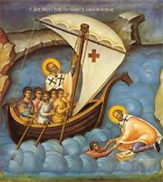

The Legend of the Shipwrecked Sailors
For hundreds of years, St. Nicholas has been a
figure in religion and folklore that’s reflected the needs and hopes of
millions of men, women and children. He’s been many things to many people.
Today we’ll see how he became the patron Saint of sailors – and what that means
to you.
The oldest story of a rescue by Nicholas of
shipwrecked sailors takes place during his lifetime. Written records, however,
cannot be traced as far back as those of the story of the three generals. The
story itself seems to have originated at a much later date.
According to the Vita
Per Michaëlem, a boat in the eastern
Mediterranean Sea runs into a severe storm. Apparently the boat – battered by
wind and water – runs aground in shallow coastal waters and the crew’s unable
to move it into deeper channels. The sailors fear that if the boat remains
stranded, the waves will batter it into a wreck.
Afraid that all aboard will perish in the turbulent
sea, the sailors pray to the distant Bishop Nicholas. They’ve never met him,
but his fame has reached them, and they believe that his prayers and
intervention might save them and their boat. As they pray, Nicholas appears
flying toward them through the air. When he lands on the deck, the storm
abates.
Rather than restricting himself to prayers and
urgings, Nicholas gives them a strong and skillful helping hand himself. He
helps them retie and strengthen the ropes holding the masts, working by their
side as they use poles to force the ship out of shallow waters and off the
rocks that endanger them. With his help, the boat is freed from the rocks. It
remains undamaged and is able to set sail for the coast. Nicholas prays with
the crew and then flies away.
The ship takes refuge in a cove, and the sailors go
ashore looking for a church to thank God for their good fortune. As it happens,
their journey takes them to Myra. They encounter many priests, but suddenly
they recognize the Saint himself, just as they’d seen him on the boat.
Doubly awed, the sailors throw
themselves at his feet and ask him how he’d managed to hear their prayers and
urgings. Nicholas answers that a life devoted to God permits a person to be so
clear-sighted as to be able, as in this case, actually to see others in danger
and hear their calls for help. He urges them to devote their own lives to pious
service to God.
It’s worth noting that the mariners of this story, when in
distress, already know of the reputation of Nicholas for productiveness in such
situations, which seems to indicate that in this case the story grew from
belief rather than belief from story.
Another version of the legend appears in The Golden Legend:
“It is read in a chronicle that the blessed Nicholas
was at the Council of Nice; and on a day, as a ship with mariners were in
perishing on the sea, they prayed and required devoutly Nicholas, servant of
God, saying: ‘If those things that we have heard of thee said be true, prove
them now.’ And anon a man appeared in his likeness, and said: ‘Lo! see ye me
not? ye called me’; and then he began to help them in their exploit of the sea,
and anon the tempest ceased. And when they were come to his church, they knew
him without any man to show him to them, and yet they had never seen him. And
then they thanked God and him of their deliverance. And he bade them to attribute it
to the mercy of God and to their belief, and nothing to his merits.” (Jacobus de Voragine, “The Golden Legend:
Lives of the Saints,” translated by William Caxton, p. 64)
Still another version relates that once travelers sailing by ship from Egypt to the land of Lycia encounter strong turbulent seas and storm. The sails are already torn to shreds by the hurricane, the ship is lashed by the blows of the waves, and all the sailors despair of their deliverance.
At this time they remember the great Bishop
Nicholas. Although they’ve never seen but have only heard of, they know that
he’s a speedy helper to all that call upon him in misfortune. They turn to him
in prayer and call upon him to deliver them from this catastrophe.
Nicholas immediately appears to them, walking on the
water to the ship, and says: “You called upon me, and I have come to help you;
be not afraid!”
He takes the helm and begins to pilot the ship. As on the occasion when our Lord and Savior Jesus Christ bade the winds and the sea, Nicholas at once commands the storm to cease. When it does, he disappears.
After this, under favorable winds, the travelers reach the city of Myra. Going ashore they go to the city, desiring to see him who has saved them from disaster. They meet Nicholas on the way to church and, recognizing in him their benefactor, they fall at his feet, giving him thanks.
Having instructed the men with edifying words,
Nicholas dismisses them in peace.
Thought to Ponder: The universal appeal of a
Saint such as Nicholas is easy to understand. Where someone may hesitate to
call upon more remote figures in the religious hierarchy in moments of fear and
stress, a more human image can be addressed without hesitation. And St.
Nicholas, by the end of the Middle Ages, was becoming more and more human to
wider and wider segments of the European population.
St. Nicholas quickly became the patron Saint of all
who went down to the sea in ships. So strongly did Greeks and Russians
seafarers count on his protection, that for hundreds of years no ship of theirs
sailed the seas without carrying an icon of St. Nicholas and a perpetually
burning lamp.
Sailors in the Aegean and Ionian seas, following a
common Eastern custom, had their “star of St. Nicholas” and wished one another
a good voyage in the phrase “May St. Nicholas hold the tiller.”
Many tales of miraculous escapes from shipwreck, due to the intercession of St. Nicholas, were related by seamen and travelers, not only at home, but at the various ports where they stopped, so that the name and fame of the good Saint grew more resplendent every year. Churches erected in his honor abound in the fishing villages and harbors of Europe.
Thought to Discuss around the Dinner Table: It is in accordance with
the spirit of Christianity and other religions that a drowning man needs help,
no matter what the moral purpose of his voyage through life may have been up to
the hour of disaster.
St. Nicholas devoted his entire life to throwing the lifesaver of salvation to sinners. How can we do the same during this Christmas season – and all year round?
Did You Know? …The Dutch kept the St. Nicholas tradition
alive. As the “protector of sailors,” St. Nicholas graced the prow of the first
Dutch ship that arrived in America. And the first church built in New York City
was named after him!
The Legend of the Shipwrecked Sailors
